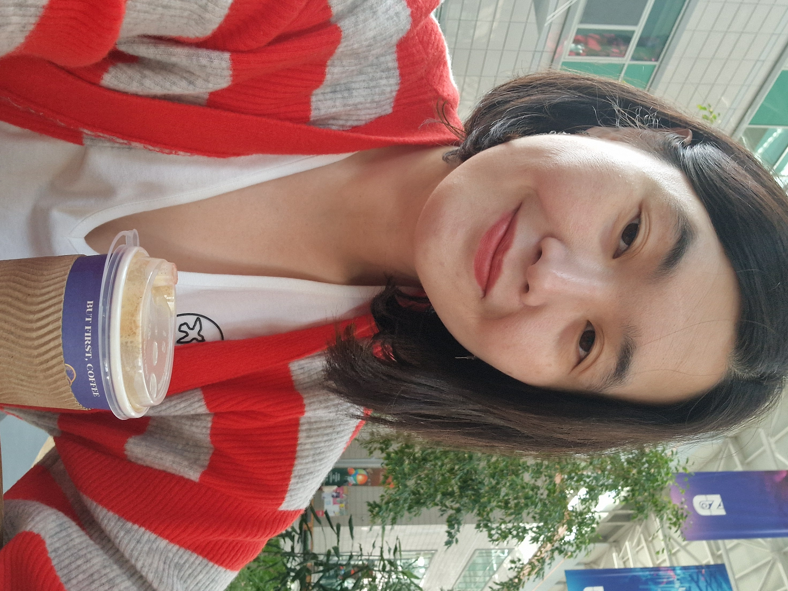

Hi, I'm Dina.
Mixed-method researcher and David Lynch fan
I study authoritarian politics: how violence gets framed, how institutions respond to it, and how people make meanings of contested things. My current work focuses on Kazakhstan, where I run a survey experiment on securitisation framing and police support after the 2022 Qandy Qantar events, a community-based participatory study of domestic violence crisis shelters, and a constructivist grounded theory study of heteronormative accountability and public attitudes towards sexual and gender minorities.
I'm also building a practice around AI-augmented social science. Not AI as a shortcut, but AI as a genuine cognitive partner in research and teaching. I'm developing some of the first AI-integrated methods courses in the social sciences. The field is wide open, and most of the interesting questions haven't been asked yet.
I'm ontologically flexible. I work with experimental designs and Bayesian process-tracing when the question calls for it, and with CBPR and constructivist grounded theory when it doesn't. I'd rather pick the right approach than defend a methodological tribe.